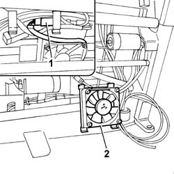
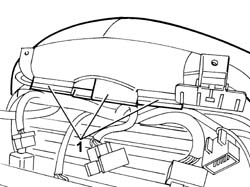
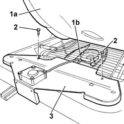
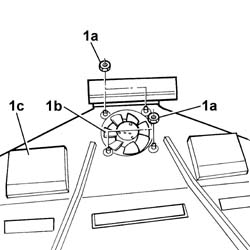

7045N12 FRONT CUSHION FRONT FAN - R.R. WITH SEAT REMOVED
- Path
- Procedures > 70 FITTINGS > 7045 FRONT SEATS > 7045N COMFORT FRONT SEAT FUNCTIONS > 7045N12 FRONT CUSHION FRONT FAN - R.R. WITH SEAT REMOVED
- Kind
- repair procedure (removal / refitting; the operation number is the code)
- Applies to
- all engines; all production periods
- Interactive page
- https://sloeber94.github.io/elrnDB-lThss/en/#/841003019
Applies to: all engines; all production periods
 Removing
Removing
 Refitting
RefittingProceed as follows for the centre fan:
Applies to: all engines; all production periods
1. Disconnect the electrical connection for the centre fan.
2. Release the retaining tabs and remove the centre fan from the housing.

Applies to: all engines; all production periods
Proceed as follows for the front fan:
1. Release the cover from the lower part of the upholstery.

Applies to: all engines; all production periods
1. Lift up the upholstery (1a) and disconnect the electrical connection for the front fan (1b).
2. Undo the bolts fixing the bracket complete with fan.

Applies to: all engines; all production periods
1. At the bench, undo the fixing nuts (1a) and separate the fan (1b) from the bracket (1c).

Applies to: all engines; all production periods
Refitting
RemovingProceed as follows for the centre fan:
Fit the centre fan in place.
Connect the electrical connection for the front cushion centre fan.
Applies to: all engines; all production periods
Proceed as follows for the front fan:
Working at the bench, tighten the fixing nuts and fit the fan on the bracket.
Fit the bracket complete with fan on the mounting.
Tighten the bolts fixing the bracket complete with fan.
Secure the cover to the lower part of the upholstery.